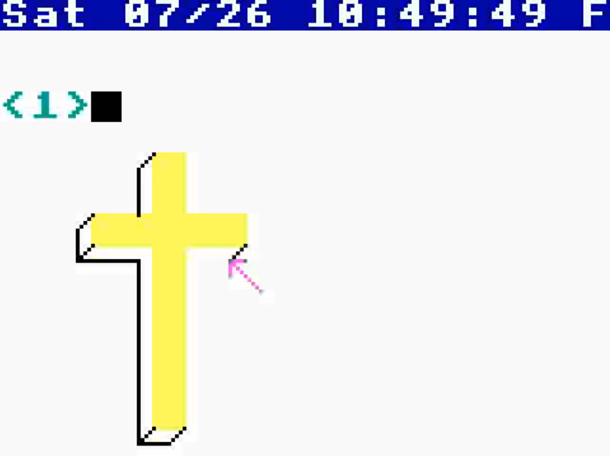

Emacs Is Not Enough
译者序
这是一篇翻译。
原文
(亲爱的读者, 我有些时候可能会叫你 “老铁”, 请务必不要慌张, 这只是一种文学技巧. )
(警告 ：这是一篇发癫文, 我并没有给出来什么解决方案, 只是指出了一些问题（而且是其他大部分编辑器都存在的问题）. 如果你不想看我发癫, 可以去看看我的其他文章, 还有我上一篇描述本项目的文章 )
(作为对本文章的回应, Emacs Survey调查结果也得到了一点显示方面的提升. 同时也有人告诉我 ELPA 里面其实是有一个 CSV-mode的. 我之前并不知道这个包, 但是单凭这个包存在不可能解决任何问题, 一点可能性都没有. )
(还有, 你可以顺便看看这个 HackerNews 帖子, 我在那里回复了一些问题. )
I have a feeling that the changes that would help are deeper issues than the shape of corners.
我感觉, 真正有用的变化比圆不圆角的问题更深层次.
– Richard M. Stallman1
Emacs 属于那种很奇怪的软件, 只要你愿意接受, 它可以提供你无穷的力量.
它的用户画像也很独特, 这些用户很讨厌人机交互的低效, 于是他们会花很多时间在软件上修修补补, 优化自己的工作流. 他们每个人都是高手用户.
你知道吗, 如果你投入一定时间去配置自己的工具, 确实可以让你的使用体验舒适那么一点. 我认为所有那些关心自己按了几下键盘动了几次鼠标的人, 内心都是一个高手用户.
Figure 1: Douglas Engelbart 的 铅笔比喻, 即“工具很重要”
不幸的是, 大部分的人都已经学会了怎么去习惯垃圾工具. 而且, 在我们的文化里面, 对所谓“能把工作做完就行”哲学的崇拜太过普遍, 导致任何牵涉长期投入的事情, 恐惧和懒惰最终都战胜了对舒适的渴望.
然后还有那些游民, 过客, 那些仅仅通过默认 Emacs 的功能就去评判它的人.
但高手用户不是这样评判一个工具的. 相反, 高手用户会仔细分析软件所提供的功能, 以及如何利用这些功能来为自己做事.
所以, Emacs 的目标受众是高手用户, 而且他们最终也会以各种方式开始为这个生态系统作出贡献.
Emacs 已经为自己赢得了一批忠实的信徒. 在各种软件里面敢把自己和 Emacs 对标的程序也没有多少, 这也有可能是 Emacs 获得这种崇拜与名声的原因.
有些人也因此认为 Emacs 是不朽的, 也没有别的软件能替代它.
但有一点需要说明的是, Emacs 能存活这么长的时间, 不是因为它太好了, 而是因为别的软件都太烂了.
让我们把时间拖到很久很久以前.
你还记得自己小时候在土坑里面玩的时光吗? 在幼儿园或者家旁边的土坑里, 和你的那些小伙伴一起玩沙玩土玩泥巴的岁月? （你小时候还是有朋友的对吧? 你不是从小就属于那种闷闷不乐独自出没的怪人对吧? ）
就我的经验来讲, 单纯的一个土坑是没有什么意思的, 你需要水, 需要石头, 需要树枝, 或许还需要些草, 还有一些想象力去搭一些火柴人或者小汽车什么的. 哦我偏题了.
来听听这个:
Terry A. Davis 的 TempleOS 可以直接在终端里面绘制精灵图.
在 终 端 里. 绘 制. 精 灵 图.
仔细看看!

Figure 2: TAD 在终端打印的十字架精灵图, 用来演示 TempleOS 中的图形编程.
甚至还能是 3D 图形!
然后这个精灵图可以被嵌入到源代码里, 而且还可以用指针去引用它.
在他自己写的终端里面.
在他自己写的操作系统里面.
用他自己写的编译器去编译他自己设计的编程语言 Holy C. （包含了他对 C 的真正有用的改进. 你应该知道, 一个人需要多强大的技术和脑力才能对 C 语言做出来真正有用的改进. ）
全部跑在一个 640x480 的界面上.
你问为什么是 640x480?
*因为上帝是这么说的. *
这个人通过一个随机数生成器和上帝进行交流.
Terry 便是至高牧师.
而且他崇尚简洁性.
他可能对你来说有点傲慢, 但他实际上确实是有史以来最聪明的程序员.
简而言之, Terry是一个不错的人. 或者他曾经是. 直到那些CIA的混蛋终于用一辆他妈的火车把他带走了. 我觉得, 除了一辆光速行驶的大火车, 什么也不能终结Terry.
安息吧, Terry Davis, 真正的上帝之言的传道者.
呃, 差不多这样了.
（嗯, 这篇文章确实是关于 Emacs 的, 继续读下去吧, 铁子. ）
Terry 传道说, 你应该去取悦上帝.
去抢个银行, 去写个飞行模拟器, 或者做个肥皂剧之类的东西（上帝喜欢这些）,
我觉得 Terry 本能地理解到, 用图形来娱乐上帝会更容易达到目的, 这也是为什么 TempleOS 中深入集成了图形的原因.
Emacs Survey 是个很有意思的事情：他们要求你在浏览器里填写问卷, 他们提供的结果也只能在浏览器里查看, 而且也提供了CSV数据以让你在 Microsoft Excel （或者 Libreoffice Calc）里面阅览.
当然, 你也可以在w3m/lynx中填写表格,
然后在 fundamental-mode 下 尝试 阅读统计结果.
然后你可以在额头上贴个小红花奖励你自己.
你可以, 当然可以.
/但你不会这样做. /
我是说, 我花了15分钟把我的答案写上去, 然后他们就贴出来一个逗号分割的CSV文件? 我他妈怎么去读这个东西啊, 我要去装 R 还是什么东西吗?
别跟我提 LibreOffice, 那个软件总是把我的行搞乱.
但我想要的是一个已经打磨好的界面, 我也很好奇为什么问卷发起者没有写一个出来. 2
或许是他们根本不鸟最终结果是什么? 那些回答就是我们的打字练习而已?
对哦, 我为啥不 直接在Emacs里面打开那个CSV文件然后自己读结果呢 ? 不知道为什么我的第一反应不是 “右键-用 GNU Emacs 打开”.
CSV 算是 文字, 对吧?
行, 让我找找, 万能的 Emacs 总有个处理 CSV 文件的插件对吧?
OK, 我找到一些 parser. 好耶, 有导入库. 耐思, 有个能导出到 Org-mode 的插件.
行吧, 那我怎么去读这些东西?
这一坨文字在 fundamental-mode 里面就跟屎山一样, 看下去如同被催眠,
我的眼睛过得飞快以至于 Emacs 的滚屏速度都跟不上我的眼球转动了.
我没看到有什么类似于 CSV-mode 之类的插件能把这些文字转换成一个好看的小表格, 然后让我去
筛选/排序/编辑这些东西.
/我要求的很过分吗? /
嗯, 不算. 事实是, 你没办法用 Emacs 做这些.
你听到了么.
/你做不到. /
Emacs 里面实现的表格编辑器会非常垃圾. 如同一小堆新鲜的牛粪, 慢慢的摊到地上, 散发着恶臭.
甚至去 显示 这样一个结构都会很操蛋.
更别提去编辑它了. （想象一下处理多行长文本框）.
嗯, 单纯从技术层面来讲, 这是可以实现的. 比如 Org Mode 就有表格, 在你编辑结束后它还能 自动帮你调整格式.
但你不会指望它去处理比你的课程表更大的表格.
我也不是说没有人尝试过改进它,比如这个EmacsConf上的演示： 面向对象的表格及其演示. 嗯, 这确实是个蛮不错的表格, 但 我发这趟癫的主旨是：
/你没必要专门去优化, 软件的使用体验是可以有一点卡手的. /
嗯哼, 当然可以 .
事实是, 你没办法在Emacs里面开发一个能用的表格程序, 即使里面是 纯文本 .
行吧, 你估计不关心Emacs能不能用来做表格, 我关心, 但是你不感兴趣.
或许你关心 Lisp, 或许你有时候也会做点 Common Lisp 开发.
我在Emacs里面写 Common Lisp, 就像其他人一样.
我用过一个软件叫 April, 是个 APL 的编译器, 可以让你进行数组操作.
我宏展开了 April 内部的 vex , 整个宏展开大概有 1.3MB, 总共26000多行代码.
至于为啥宏展开那么大已经不重要了, 它就是这么大.
然后我想着看看这个宏展开.
我能告诉你的只有体验很差. 在Buffer里面滚动的体验很差, 被
Parenthesis max limit reached.
和
Error during redisplay: (jit-lock-function 1207370) signaled(args-out-of-range [nil nil nil nil nil nil nil nil nil nil nil nilnil nil nil nil nil nil nil nil nil nil nil nil nil nil nil nil nilnil nil nil nil nil nil nil nil nil nil nil nil nil nil nil nil nilnil nil 0 1 2 3 4 5 6 7 8 9 nil nil nil nil nil nil nil 10 11 12 13 1415 16 17 18 19 20 21 22 23 24 25 26 27 28 29 30 31 32 33 34 35 nil nilnil nil nil nil 10 11 12 13 14 15 16 17 18 19 20 21 22 23 24 25 26 2728 29 30 31 32 33 34 35 nil nil nil nil nil nil nil nil nil nil nilnil nil nil nil nil nil nil nil nil nil nil nil nil nil nil nil nilnil nil nil nil nil nil nil nil nil nil nil nil nil nil nil nil nilnil nil nil nil nil nil nil nil nil nil nil nil nil nil nil nil nilnil nil nil nil nil nil nil nil nil nil nil nil nil nil nil nil nilnil nil nil nil nil nil nil nil nil nil nil nil nil nil nil nil nilnil nil nil nil nil nil nil nil nil nil nil nil nil nil nil nil nilnil nil nil nil nil nil nil nil nil nil nil nil nil nil nil nil nilnil nil nil] 8592)
霸屏的体验也很差.
还有：
Timed out waiting for property-notify event [5 times]
以及：
eldoc error: (error Lisp nesting exceeds max-lisp-eval-depth)
这些都是什么东西啊?
一点都不 流畅 .
一点都不 简洁 .
一点都不 酷 .
于是就引出个问题.
所有人都在讲 Emacs 在 Common Lisp 领域体验是多么多么的好. 当我去用它的时候, 体验最好的反而是 Common Lisp.
事实是, 用 Emacs 写 Common Lisp 体验超级差, 无论是用 Slime 还是 Sly.
无论有没有 1.3MB 的宏展开.
或许你想改名项目里的某个符号? 恭喜, 体验依旧操蛋. 内置的改名机制不知为何用起来依旧有一堆的Bug. （我忘记那个函数叫什么名字了, 或许是因为我都不想再去用它. ）
那如果我想把光标处合法的符号导入到 defpackage 里面呢?
很难.
我还想让我的 S-表达式 能在不同层级显示不同颜色, 我用 rainbow-blocks, 体验还不错.
当然, 除了有时候它直接撂挑子不干了（原因对我来说还是未解之谜）, 然后字体渲染又成一坨狗屎.
/即使所有的括号都是成对匹配的. /
我都不知道是谁开始杜撰说 Emacs 是什么写Lisp的究级大杀器, 这就是一坨屎好吧.
你想的没错, 我就没打算报告任何以上的Bug. 这些修补就像是在沉船上用纸箱子补洞一样. 而且如果你看的再仔细些, 你会发现整艘船都是用纸箱子, 热融胶和泡沫塑料.
哦还有, comint 又是个什么东西? 嗯, 用个REPL提示符实在是太难了.
输入为什么没有和输出分开? u1s1, 为啥它俩在同一个 Buffer 里面?
我还用的是 evil-mode , 光标在那个提示符上的行为简直是不可理喻. （嗯, 我
感觉这不仅仅是因为 evil-mode 本身就全是 Bug ）.
我想告诉你的是, 我的光标永远不应该出现在那个 CL-USER> 的提示符上, 永远不应该.
输出就应该放到另外一个空间. 在一个REPL应用里面输出就不应该出现在输入空间里面.
所以他们为啥出现在同一个 Buffer 里面嘞, 因为根本没有别的方式去实现它. 管理窗口位置就是这么难.
所以…这又算是什么事呢? 你知道么?
我来说吧： /Emacs已经年老力衰了. /
看看 CIDER . 它已经有n多年的历史了, 我安装了它然后结果是什么?
REPL 的 Buffer 一般的情况下都是只读状态.
/而且只有一些调用 print 的输出才会出现在那里. /
我一点头绪都没有.
/这不就是一坨屎山么? / 恭喜你答对了, 这就是一坨屎山.
当然, 你也可以问问自己为啥没办法做 multinarrowing （）
还有, 你写的大部分的Elisp函数, 本质上都是把光标在整个Buffer里面移来移去, 才能完成一点事情.
为啥要这么写嘞?
因为这很 命令式（imperative） .
还有, 需要把光标在整个Buffer里面移来移去这件事, 比所谓的命令式更可怕. 听说过 LOGO 么?
嗯, Elisp差不多就是Lisp世界里的LOGO, Emacs就是那只搞文本编辑的小王八.
Emacs: 重生之我在纯文本异世界给乌龟编程
还有, 任何事, 无论是什么事, 永 远 都 要 花 一 个 世 纪 的 时 间 才 能 完 成 .
我知道你很急, 但你先别急哈, 后面还有更多让你好急的.
举个例子哈, Elisp的补全为啥总那么慢呢?
为啥所有的 <语言>-mode 都那么不稳定呢?
为啥这整个玩意儿就那么不稳定呢?
还有哈, 我都 不想 跟你说 Org-mode 里面那些乱七八糟的事情了.
缩进被搞乱已经是常规操作. 你试试在脚注里面插入个链接, 看看能有多好玩.
标签不允许有连字号(-)和空格. 表格很难用. 导出过程不透明. 处理代码块
(org-babel) 带给人坐在电脑屏幕前能感受到的最纯粹最极致的痛苦.
我还能继续说下去, 但没必要把所有的问题都列出来.
哦对, 你试试让 Org-mode 在文字段落折行但是在代码块里不折行, 你压根就做不到, 对吧?
而且我根本没办法想你阐述那个链接功能用起来有多么累人. 甚至连自动更新都没有. 一个指向某个标题的链接, 一旦你更改了路径里的任何部分, 它就会失效. 然后我就得 手动 搞自定义标识符.
然后, 每次我在一个比较大的文件（甚至也没那么大, 172KB）里调用 insert-heading-dwim ,
我就得等整整一秒钟直到那个标题出现在树里面. When you edit a list of items, checking an item
at point will rescan the whole tree, because, hey, you gotta rescan
and recalculate all that stuff, right?
这些东西其实不需要那么难用, 如果 Buffer 被 结构化 的话.
结构 是个很重要的概念. 在下面它会出现的越来越多.
Emacs是个编辑文本数据的编辑器, 对吧? （嗯, 希望那些文本不要太长. ）
Emacs用的数据结构叫做 gap buffer.
Gap Buffer.
你真的没办法在这上面再构建其他结构.
嗯, 就这样, 一个 Gap Buffer .
Emacs里面没有什么好的机制可以推行结构, 除了 overlays 或者 markers 或者 regexps. 我个人看法是, 没有一个算得上是好机制. 整个系统细看就是一堆宽胶带和WD小蓝罐.
Emacs 里面的 Overlay 会跟踪字符串的位置. 它们的工作原理就像往墙上扔泥巴希望能粘上去一样, 或者是尝试把铜导线焊到铝接面上, 幻想着它能一直正常工作下去而不会过几天就接触不良. 这是一种相当昂贵且大幅影响性能的丑陋解决方案.
这就是为什么 JSON 文件编辑起来一直很慢, 直到魔改了 core 搞了一些优化才能稍微保持在一个能用的程度. 为啥它本来就得这么慢呢? 嗯, 因为用正则表达式做语法高亮是个很他妈糟的馊主意.
是的, 有很多人只用宽胶带和一罐 WD 润滑剂就能完成许多细小琐碎的事情. 有些人甚至为他们这种实用主义艺术而自豪.
但这不是你正儿八经打算构建什么东西的时候应该用的解决方案.
类似于 org-ql (它能让你查询一个 Org-mode buffer) 就不应该存在 .
你想做的是 提供基础结构, 然后只需要 把它们暴露给插件开发者. 而且不应该仅限于插件开发者： 几乎每个用户函数都需要结构知识.
在一个需要形式化的结构才能正确工作的文件里, 如果你不强制在任何时候都推行 结构化, 那整件事就没有任何意义。想想看, 你要做些什么丑陋的事情才能让一个 没有任何结构 的文档正常工作。嗯, 我第一个想到的就是解析。然后如果出现什 么问题（而且肯定会出现）, 再加点解析进去, 同时再来点特殊错误处理。然后在 加点缓存机制, 因为“啊这, 这玩意儿跑得有点慢哈”。然后再转回来加点错误处理, 更多的解析和重解析, 因为“啊这, 它怎么又坏了？”或许顺手再优化一下你的编译 器。啊这, 加了缓存还不够吗？怎么什么东西都又慢又难用啊。马萨卡, 终于要展 示真正牛逼的优化技巧了么。难道卷起袖子觉醒升华的时刻要到来了吗？
嗯, 你先别急, 给你介绍一下有个 24K纯钛合金一百万流明核弹级杀伤力亮瞎你狗 眼 的东西叫 残酷现实.
你那阳光彩虹小白马的美好幻想在现实落下的一瞬间如同万米高空跳伞的镜子一般 摔的粉碎, 你那万事万物皆可迭代优化的美好愿景也一同消逝。不用想着去优化速度了, 先试试让它正常工作：它再也没办法正常工作了。
你就会意识到：
扫除这个烂摊子的唯一方法就是 强制实施结构 , 这是唯一能让它正常工作的方法。
这里的 结构 是指一个你可以直接和它交互的数据结构, 没有中间商赚差价的那种。 然后, 你的那些优化目标从一开始就处于一个较高的层级, 事实上你可能根本不需要去 考虑性能的问题了。
忘掉那些乱七八糟的编程奇技淫巧, 没人应该去受那种罪。
你想要的是强健和漂亮的程序, 还是半吊子的丑陋代码？ 选个专用的结构, 而不是 gap buffer。 Emacs的本质就是一个又一个的gap buffer。
还有, Emacs里的所有东西本质上都是 字符串 。
当你经手的数据都是字符串的时候, 在其之上推行结构化以及任何基于结构的功能就变得太难了。 当然, 在一个 buffer 里面强制结构化并不是不可能, 但是如果你想写个比较实际的功能就会完全不值得。
Major mode 之所以存在就是因为我们经手的大部分数据都是有内在结构的。Major mode 存在的唯一目的 就是处理有特定结构的数据。
你能想到的所有 Major mode 都是这样, 除了 fundamental-mode, 它只会告诉你它不知道这个文件是啥东西。
—
如果你在造自己的文本编辑器, 然后你发现自己在问类似这种问题：
我应该选哪个： gap buffer？ 树？ 要不要再拿个绳子吊死自己？
正确答案当然是：
都不是, 至少在大部分情况下。
有些人就是喜欢像小孩子一样做选择。
明明可以全都要。
你应该根据你要编辑的数据去选择对应的数据结构。你不需要把自己限制到一个结构里面尝试着用它表示所有的数据。 很奇怪的是似乎当今所有的编辑器都喜欢这么做。
他们用的数据结构是： 字符串 。
我们为啥不用专门的编辑器去编辑专门格式的文件呢？
我也不知道, 但肯定不是因为这种方法太难了。为一个文件格式写一个量身打造的专用编辑器肯定要比 魔改一个通用编辑器简单（至少在不用当今的那些架构的情况下）。
人们通常认为一个通用的数据结构有益于设计一个对各种的文本文件都通用的接口, 但专用编辑器没理由不能 拥有一样的通用接口。
Emacs就是不擅长文本处理。
人们通常以为 Emacs 就是用来做文本处理的, 所以它肯定很擅长这些, 但它就是不行。
它没有专用的处理机制。只有 Buffer, 本质上就是字符串。 你没办法在字符串上面 搞什么骚操作, 可以偶尔搞些奇技淫巧但也就只能做那些了。
结构的缺失会滋生半吊子的解决方案。
最重要的是, Emacs 促使你去用一种命令式的编程风格。 小乌龟小乌龟小乌龟
而且, 没有什么高级的API接口可以用。那搞起来也太难了。
难怪什么事都要花那么长的时间才能完成。 我的 Emacs 配置里面现在有两百多个 todo。 3 还有很多人比我都多。
大部分的 todo 看起来都很容易。
但是真的要实现就很难。
—
– <作者名>, 你×××了是吧, 啥东西让你这么激动？
没啥, 真的, 没啥。或许就是因为 Emacs 太糟糕了。
也不是我很关心。我当然也在我的 Emacs 配置上面浪费了几百个小时。
好吧我也不知道自己在骗谁, 肯定不是骗别人了, 那就是在骗我自己。
事实是几千个小时, 那是好几个月。
就像大部分人一样。
但说实话那些折腾也没什么价值。我根本不觉得我有一丁点得心应手的感觉。
我的 Emacs 刚开始感觉很难用。几年过去了, 它依旧很难用。我的三千多行的 .emacs
依旧感觉很难用, 就算我有个替身一天到晚帮我折腾我的配置, 磨平任何硌到我的地方, 虽然这种工作量
比 200多个 todo 要大的多, 它还是很难用。
但我可以说的是, 这种苦劲解决不了任何问题, 何况是一个配置。
我已经不再往里面加新的 todo 了。
还有, 你听说过那种配置只有几行还觉得用的很开心的人吗？
那些不是真的 Emacs 用户。他们只是在装逼。
你如果没有一直在折腾你的 Emacs 配置, 那你就不是一个合格的 Emacs用户。
我不会去听他们的意见, 他们明天估计就会发篇博客宣布自己出走去 VSCode 阵营了。就先忽略那帮人好吧。
—
行吧我们到哪儿了？
如果 Emacs 这么烂, 为啥就没人去修好它呢？
呵呵。 重写 Emacs 可能是所有 Emacs 讨论里面最常见的陈词滥调了。
那帮写 Common Lisp 的？ 他们总想着要 移植他妈的Emacs 或者 重写他妈的Emacs 或者 复制他妈的 Emacs 或者 以某种方式成为Emacs 。
或者： YY 出来一个魔法一般的兼容层然后就可以 从 Emacs 那里偷点代码过来 ！ 这个想法的 无理程度和其传播广度不相上下。 它不停地在各种群聊里出现, 借机将人们的目光从真正的问题上转移开。
还有, 啊对, “移植” 。 将Emacs移植到某种外部生态 （比如 Guile）将会更糟糕。 任何种类的合并都会导致 同质性 问题, 即使是 Guile, 尤其是 Guile。
移植/导入/合并 本质上就是对生态的一场人造灾难。
当然, 没人会把这种讨论当真。因为所有人都明白这种东西已经有人尝试做过了, 而且尝试的结果并不好。
就算可以做出来, 也不会解决任何问题。
如果你想的是移植 Emacs, 你永远也不可能替换 Elisp 或者修好 Emacs。 移植的想法本质上就否定了 将 Emacs 转移到一个更好的系统上的意义, 因为这些系统必然不兼容。一个比当前远远更好的系统才会迫使人们转移, 所以它们必然会有本质上的区别。故, 必然不会兼容。
你应该知道, 人们不仅仅是提议要重写或者移植, 已经有几个项目在这么做了。虽然这些努力都是好意的, 但是它们完全都是徒劳。
Emacs的问题不仅仅是语言层次上的。
当然, Elisp 不是 Lisp 方言里面最好用的, 但是它够用。 事实上, Elisp 可能是 Emacs 最好的部分。
但在所有这些讨论中, 总有一个主要的心理障碍不断浮现, 那就是： 插件 。
– 但我们怎么可能重写或移植Emacs以及所有那些 超级 有用的代码呢？
听着： Emacs不需要被重写。
事实是： 我们不想要另一个Emacs 。
我们想要的是某种本质上不同的东西, 一种支持 结构化方法 的东西。
Emacs与这种结构化的想法几乎不兼容。所以, 那些数十亿行的 Elisp 代码是一种负担, 而不是资产。
为了拥有一个更好的文本编辑Lisp环境, 我们需要放弃所有的Elisp和所有的Emacs。 并且永远不要回头。
– <作者名>, 但是有5000多个包呢？
呵呵, 去他妈的吧。我们根本不需要他们。
去他妈的 5000 多个包, 去他妈的几万个几十万个包。
我告诉你, 这些都不重要。
如果基底都已经腐烂了, 我根本不在乎有多少人费了多少个小时去证明这个基底是值得的。 这一切都是沉没成本和损害控制。
还有, 记得我跟你说命令式代码的事情吗？ 我再来个王炸：所有被写出来的 Elisp 代码都挺垃圾的。 我不是在批评这些代码的作者, 这不是他们的错, 但事实就是这样。
我们想把这些代码倒进下水道, 而不是留着。
让我们来看看一些 Elisp 代码, 单纯为了好玩。
相信我, 他们看起来都是一样的东西：
- beginend: 为某些 mode 重定义 M-< and M-> 。
- belarus-holidays: 白俄罗斯假期, 包括调休。
- cfrs: 基于子窗口的字符串读取。
换句话说, 就是一些垃圾。
真正有意思的也就只有 Org-mode 和 magit 。就这些了。 而且由于Git是给低等人用的, 这就只剩下Org-mode了。
Emacs中没有大型应用程序。Emacs包通常不解决比较复杂的或大规模的问题。
而且鉴于这些小插件的质量 —— 我们不会丢失真正有价值的东西。
其他的东西也就是什么秒表, 十几个补全框架, 几万个半吊子的编程语言支持, 主题配色, 以及任何 alphapapa 突发奇想写出来的东西。
冷笑话 。
俄罗斯方块 。
你难道看不出来这都是些没用的东西吗？
真正有用的东西两只手就数的过来, 我们可以直接偷走, 但是这次要好好做。
而且我们根本不需要去看那些包, 我们只需要回想一下自己用这个软件的体验。那些才是估值这些包的正确方法, 而不是去看代码。
– 但是那是好几十亿行的 Elisp 代码诶！
你说的对, 但都是废话。Emacs 当前的架构根本不足以支撑这么重大的更改。这个平台不是最优解。最好的方法就是扔掉所有包袱。
而且这些仅仅是关于文本的, 我还没有提到别的东西, 比如矢量图。
– <作者名>, 你为啥会觉得一个文本编辑器需要图形支持呢？
菜鸟问题, 但我还是会回答, 因为这个问题很有启发性。
谁说 Emacs 是个文本编辑器了？ Emacs 恰好只是一个人们可以构建 好用的 文本界面的平台。
如果它有好的图形支持, 人们当然也会去用它。 人们尝试着给它粘上去图形支持 （比如 GTK 部件 4） 但这些都不是最佳实践, 所以没人回去用它。正如预期。
– <作者名>, 如果 Emacs 这么烂, 为什么你还在用呢？
因为剩下的东西都是更难用的一坨狗屎。
– <作者名>, 你刚才提到 Guile, 用别的编程语言扩展 Emacs 难道不好吗？ 不是会让 Emacs 更强大吗？
在虚拟机上运行除了 Elisp 以外的任何东西都是个 坏主意 。那些认为这个想法很好的人都忘了 Emacs 的主要受众： 他们忘了 Emacs 是给高手用户用的。
当你有一大坨没办法很好协作语言粘在了一起, 你就被剥夺了控制力。 你最不想做的就是剥夺高手用户的控制力。
你可以在你的 Lisp 镜像里加载一个 Lua 解释器, 或者允许扩展性FFI。但没人能从这些东西里面获得更强大的力量, 只能获得一些短效的便利, 而给以后的高手用户平添障碍。 你不可能用 Lua 写最基本的文本函数并指望你的受众接纳它。
我在其他文章中更详细地谈论了这个问题, 并将这个问题称为 同质性 。
– <作者名>, 你真的没办法用什么奇技淫巧去改善Emacs吗？
做不到。
– <作者名>, 不是已经有很多结构化编辑器了吗, 他们不都很烂吗？
确实有结构化编辑器存在。是的, 它们确实很烂, 因此没有人去用它们。 之所以没有人去用是因为你无法像用 Emacs 那样用它们, 让光标在整个程序里跳来跳去。
但这并不意味着它们也做不到, 或者它们必须很烂。我在前一篇文章中提出了 无缝 的结构化编辑。
– <作者名>, 专用的结构化编辑器难道哦啊不是更难写吗？
不是。其实更简单, 因为你可以在不同地方复用编辑器。 结构化也有利于复杂交互和互操作行为的设计。
– <作者名>, 如果有很多专用编辑器, 你难道不需要给每个都单独写配置吗？
通用机制的配置（比如快捷键绑定）可以共用。所有的编辑器都需要提供一个文本处理的通用接口。
– <作者名>, 但 Emacs 肯定是做对了一些事情的对吧？
是的, 有好几件事情。
Lisp。Elisp 可能没能成为现存最伟大的 Lisp 方言。它在多线程、命名空间以及 其他方面存在一些问题。但总的来说, 它还够用, 而且肯定不是Emacs目前面临 的最糟糕的问题。
还有的话, 可扩展性。在一定程度上。Emacs展示了交互式可扩展性可以是什么样 的, 以及它如何为我们服务。我觉得它展现了有很多人可以在个人计算平台中喜欢上这种可扩展性。
之前, 我也批评了 Buffer 的概念, 但是 一切都是Buffer 的想法被证明非常方便。 这意味着每个东西都有一套共同的界面, 并通过相同的一套命令来操作。（除了 modeline 。它太结构化了, 无法通过非结构化方式实现。）
还有什么需要补充的吗？可能没有了。
– Emacs及其插件生态中的那些代码真的没有一点意义吗？
写新的代码是一种罪过, 但把代码扔掉可能是人们能做的最光荣的事情。
我会稍微重申一下。但可以确定的是 Emacs 没有 结构化意识。
因此, 它所有的插件和功能只能做到用户想要的50%, 大多数连 50% 都达不到。
平庸的体验已成为常态。
Emacs既不擅长专用化, 也不擅长嵌入, 更不擅长整合。 比如, 你没办法创建一个不同区域使用不同 mode 的 buffer。有些奇技淫巧, 但它们很烂。
Emacs里的所有工具只能让你 勉强应付 , 它们并没有带来任何伟大的东西。
如果你不能专用化, 你将永远效率低下, 你的程序将永远难用。
Emacs里面没有一个部分会发生本质上的改善。你敢想象在其之上 不断构建更多的垃圾 吗？
至少我不敢。
我宁愿有一些专用化的工具, 它们在100%的时间都有效, 或者至少可以改进到那个极限。 （这些工具必须生活在一个系统内, 以便它们能够相互集成和互操作。）
– <作者名>, Emacs 可以变得结构化吗？
如果你已经阅读了前一篇文章, 尤其是关于 Rune 的部分, 你就会知道我认为 无缝结构化 编辑是处理文本的更优方式。
Emacs能采用这种思维方式吗？让我们思考一下。
首先, Emacs 的核心必须变得更像Lisp。但这只是前提。
其次, 需要真正地扩展 buffer 的定义和能力。
这就像试图把一列货运火车变成直升机, 同时计划所有的轨道最终还得连接在车轮上。
你会遇到同质性问题, 这比“换个语言重写”更难解决。
原则上我不觉得这不能通过向后兼容的方式解决。但实际上, 直接放弃结构化编辑 从头开始写要更简单。
这还没考虑到任何完整的GUI框架, 或一个能用的原型系统。
即使 Emacs 的核心能够接纳其中极小一部分功能5, 整个生态的包和代码也不会自己更新。但它们确实在 道德层面 上过时了。
所以, 无论如何, 再见, Emacs。
Emacs 本质上就缺失灵活性。而且不仅仅是C的问题（那甚至不占所有问题的十分之一）。 是默认设置, 全局状态, 整个基于字符串的模型。
而那个模型 搞砸了 。
我不喜欢Emacs核心的一点是它主要是由API驱动的。 我认为真正强大的核心不会给你一个API, 而是给你砖让你自己建房子。
在Emacs中唯一的构建块是 buffer, 而那基本上是一个为个人计算平台包装的、以磁带驱动的图灵机。
—
我并不是在责怪或否定Emacs。它无疑是一款令人印象深刻的软件。
但同时我们需要看到, Emacs的能力受到不断出现的边缘案例的束缚。 换句话说, 总会有些东西稍微有点问题, 这并不真的是因为它不够好。 问题在于底层不够好。底层保证了你将永远有不断的效率低下和问题 随时出现 。
更不用说由于缺少结构性带来的限制, 很多功能永远不会被尝试, 甚至不会被想到 。
我们想要的是什么呢？可组合的对象。可嵌入的结构。 在 是什么, 而不仅仅是如何表示 的层面上对一切进行程序化访问。 这就是你需要从哪里开始构建你的编辑器：从任何给定对象的固有结构开始。 把事物视为具有文本界面的对象！ 针对每种结构的专门编辑器, 许多这样的编辑器相互操作并/由/其他编辑器组成。 这将产生更好的界面, 更多的控制权, 消除冗余, 提高速度。 最后：它会/更简单/。因为这就是灵活性与结构结合所给你的：力量。而力量可以使复杂的事物/简单化/。
Emacs在其界面能够多么强大的方面已经达到了极限。
然后还有性能的问题。
编辑这个网站的HTML让我想起了真正的糖蜜般的恐怖。 当然, 糖蜜虽然慢, 至少是连续和平滑的。Emacs则不然, /哈哈/。